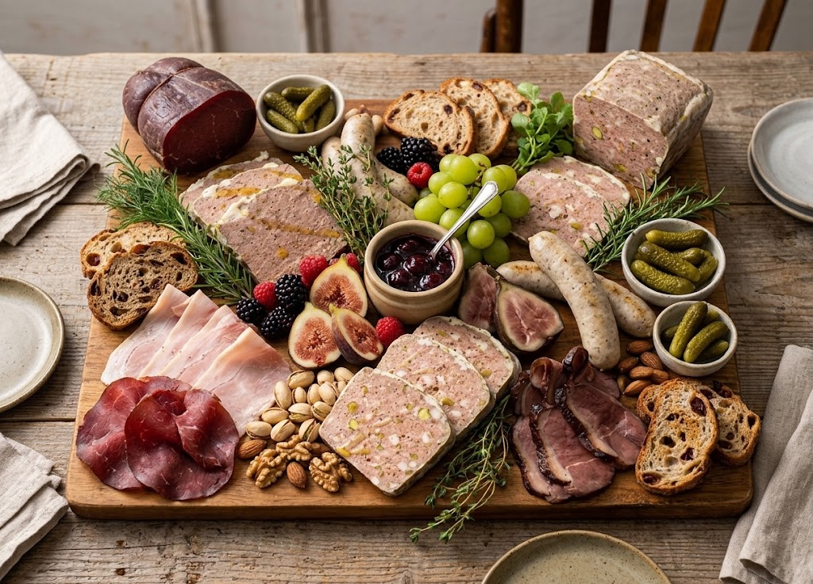
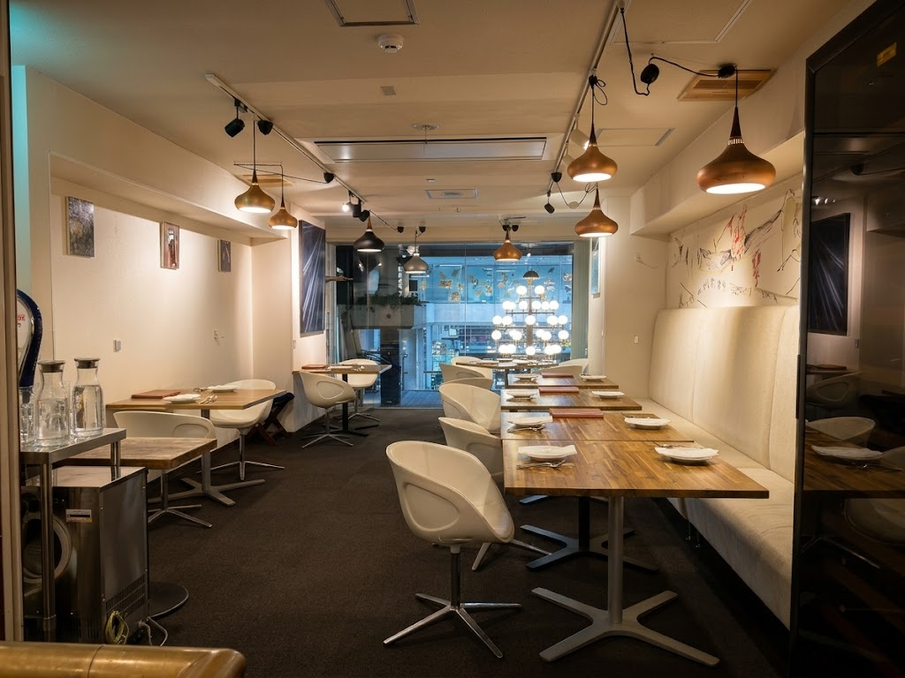
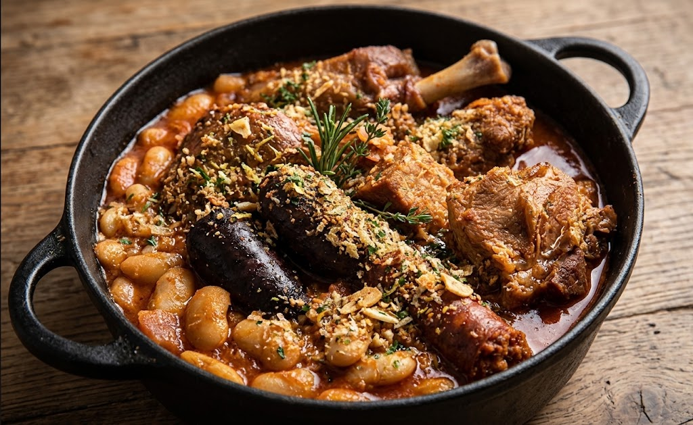
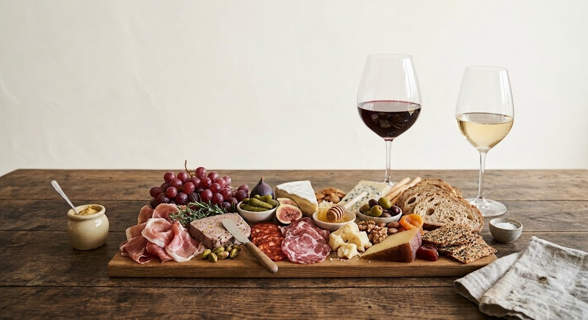

イチオシ｜ランチ
シャルキュトリーランチ
3日間漬け込んだ塩漬け豚の、深い旨味。手間暇をかけた一皿が、いつものランチを変えます。
昼から本格ビストロ！ 塩漬け豚の旨味が、仕事の午後を熱くする。

ホテルロイヤル盛岡の裏手、知る人ぞ知る隠れ家。フランスの郷土料理とワインを、肩ひじ張らずに楽しめるビストロです。友人との食事から記念日、貸切まで、使い方は自由です。

看板のシャルキュトリー、南フランスのカスレ、そして豊富なワイン。
3日間漬け込んだ塩漬け豚の、深い旨味。手間暇をかけた一皿が、いつものランチを変えます。
昼から本格ビストロ！ 塩漬け豚の旨味が、仕事の午後を熱くする。

盛岡では珍しい、南フランスの煮込み料理。旬の食材を使った多彩なフレンチも、一皿ずつ丁寧に仕上げてお出しします。

料理に合わせて選ばれたワインが、常時たっぷり。グラスでも楽しめるので、飲み比べもできます。
夜はシャルキュトリーとワインのマリアージュ。
ご来店くださった方のクチコミ（抜粋）です。
思いのほかカジュアルで気軽に過ごせる空間。なんでも美味しい。ワインが豊富でグラスワインも充実しているので飲み比べできて嬉しい。スタッフの女性が親切で、料理とマリアージュになるワインをチョイスしてくれる。
Googleマップのクチコミより
厳選されたこだわりのワインが多く、グラスでオーダーできるのがワイン好きにはたまりません。料理も本格フレンチで大満足。しかも東京では決してあり得ないリーズナブルな価格。
Googleマップのクチコミより
テーブル席とカウンター席あわせて約60席。落ち着いた空間で、雰囲気や景観にも定評があります。
準備中のサービスです。詳細が決まりましたら、Instagramでお知らせします。
期間限定で、フレンチと寿司の発想を一つのコースに。
看板のシャルキュトリーを、ご自宅や集まりへ。
ソムリエの解説とともに、料理とワインの組み合わせを味わう夜。
ホテルロイヤル盛岡の裏手にあります。